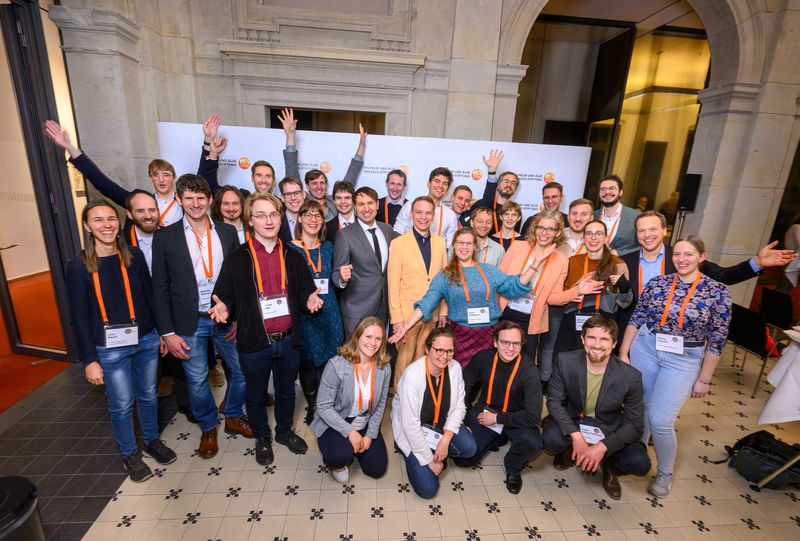
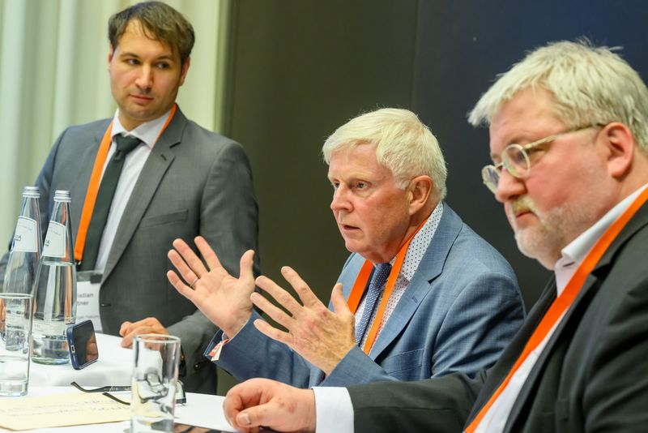

Am 6. November 2025 zeigte sich in der Berlin-Brandenburgischen Akademie der Wissenschaften erneut, dass die Jahresveranstaltung der Wilhelm und Else Heraeus-Stiftung ein Ort lebendigen Austauschs ist. 180 geladene Gäste diskutierten über Zukunftsfragen – interdisziplinär und generationenübergreifend. Die Stiftung verbindet dabei, was selten zusammenkommt: junge Talente und erfahrene Entscheidungsträger:innen aus Wissenschaft, Industrie, Schulen, Medien und Politik.

Wissenschaft als Brückenbauer
Unter dem Motto „Mit Physik die Welt verstehen und gestalten“ eröffnete Jürgen Mlynek das Forum und betonte, dass Wissenschaft immer wieder Brücken baut: zwischen Individuen und Generationen, zwischen Nationen, Religionen und Kulturen. Ein beeindruckendes Beispiel sei das 60-jährige Jubiläum der deutsch-israelischen Beziehungen. Deren Grundstein legten Wissenschaftler:innen der Max-Planck-Gesellschaft, die bereits zwanzig Jahre nach dem Holocaust nach Israel reisten und damit den Weg zu neuer Freundschaft bereiteten. Herr Mlynek hob hervor, wie sehr die Stiftung Projekte in diesem Geist unterstützt, etwa das internationale Synchrotron-Projekt SESAME. Brücken zwischen Wissenschaft, Wirtschaft, Politik und Zivilgesellschaft zu schlagen – genau deshalb gebe es dieses Forum.
Mehr Engagement in der Politik
Ein weiterer Impuls ist das Bundestagsstipendium der Stiftung, das jungen promovierten Physiker:innen ermöglicht, Politik unmittelbar zu erleben. Herr Mlynek betonte, wie wichtig es sei, junge Menschen einen Blick „in den Maschinenraum der Politik“ zu ermöglichen – zugleich erhielten die Abgeordneten Zugang zu wissenschaftlicher Expertise. Stephan Albani (MdB, CDU) hob hervor, wie zufrieden er mit beiden seiner bisherigen Stipendiaten gewesen sei – eine Erfahrung, die Herr Mlynek zufolge viele beteiligte Abgeordnete teilen.
Wissenschaftliche Politikberatung
Nach zwei Showcases zu optischen Uhren (Prof. Tanja Mehlstäubler, PTB Braunschweig) und der Zukunft der Halbleiterfertigung (Thomas Schafbauer, Infineon) starteten fünf parallele Deep Dives. Das Thema „Wissenschaftliche Politikberatung“ stand in meiner Verantwortung, Christian Kuttner (Nature Portfolio) und Leading for Tomorrow (L4T) Alumnus, und knüpfte an meine Erfahrungen als Bundestagsstipendiat an: einer Tätigkeit im Grenzbereich zwischen wissenschaftlichem Berater und Praktikant mit Doktortitel. Als Impulsgeber eröffneten Stephan Albani und Norbert Holtkamp (Hoover Institute, Stanford University) die Runde - zwei unterschiedliche, aber komplementäre Perspektiven: Beide Physiker betonten wissenschaftliche Evidenz als Fundament politischer Entscheidungen.
Deutsche Parlamentspraxis trifft US-Think-Tank-Kultur
Herr Albani berichtete mit großer Offenheit aus seinem parlamentarischen Alltag. Wie er sich als Physiker den Spitznamen „Erklärbär“ verdiente, der komplizierte Zusammenhänge im Bundestag verständlich macht. Wie wissenschaftliche Evidenz in politische Entscheidungen Eingang findet - oft leise, kleinschrittig und weniger über Gutachten als über persönliche Gespräche. Und wie schwer es ist, Tempo, Mehrheitsfähigkeit und Kompromisskultur auszubalancieren.
Herr Holtkamp schilderte die US-Perspektive: die zentrale Rolle privat finanzierter Think Tanks, die hohe Professionalisierung politischer Beratung und strategischer Expertise sowie die Fähigkeit des US-Systems, bei Bedarf enorme Geschwindigkeit zu entfalten – etwa beim CHIPS Act. Zugleich verwies er auf die „Schaukeleffekte“ des Systems und die Instabilitäten, die entstehen, wenn Tausende Positionen bei jedem Regierungswechsel neu besetzt werden; ein Pendel zwischen Effizienz und Instabilität.
Diskurs über Kontinuität und demokratische Geschwindigkeit
In der Diskussion mit dem Publikum ging es um Effizienz und Kontinuität, das Heizungsgesetz als deutsches Beispiel politischer Hürden und um die Frage, wie viel Geschwindigkeit Demokratie verträgt. Zuspitzungen wie „TikTok vs. Parlaments-TV“ verdeutlichten diese Spannungsfelder.
Mathis Fricke (Focussed Energy), ein weiterer L4T-Alumnus der als offizieller Berichterstatter im Plenum fungierte, fasste zusammen, dass die systemischen Unterschiede beider Länder in deren Beratungskulturen und gesellschaftlichen Erwartungshaltungen lägen. Dies erklärt, warum in Deutschland Entscheidungen häufig nicht an fehlenden Fakten scheitern, sondern an der Schwierigkeit unbequeme Konsequenzen zu vermitteln. Damit stellt sich die Frage, wie sich komplexe Sachverhalte in einer Kommunikationswelt behaupten, die Geschwindigkeit und Vereinfachung belohnt.

Er nahm Bezug auf den Vortrag von Prof. Mehlstäubler: Optische Uhren erreichen eine relative Genauigkeit bis 10⁻²¹, jenseits unserer Vorstellungskraft. In der Politik jedoch braucht es eine andere Art von Präzision: die Trennung von Fakten und Werturteilen und den Mut unbequeme Wahrheiten auszusprechen. Genau hier entfaltet wissenschaftliche Politikberatung ihr Potenzial.
Fazit
Das Novum der Berichterstattung aus den Deep Dives war ein gelungenes Experiment. Vier weitere L4T-Alumni - Olivia Noack, Diana Khapipova, Jana Bröder und Matthias Widmann - fassten die Ergebnisse der parallelen Sessions zusammen und stellten so die Verbindung zum Plenum her. Damit griff die Stiftung den Wunsch der Alumni auf, aktiver mitzuwirken und stärker sichtbar zu sein. Es folgten die erstmalige Verleihung der WE-Heraeus Research Fellowships sowie eine abschließende Diskussion zu Innovationsökosystemen, bevor der Abend in intensiven Gesprächen ausklang.
Im Namen aller L4T-Alumni und Bundestags-Fellows danke ich der Wilhelm und Else Heraeus-Stiftung herzlich für die Einladung und für das Vertrauen, aktiv mitzuwirken. Das WE-Heraeus-Forum bleibt ein Ort, an dem Physik Brücken baut.
Zurück zur Startseite